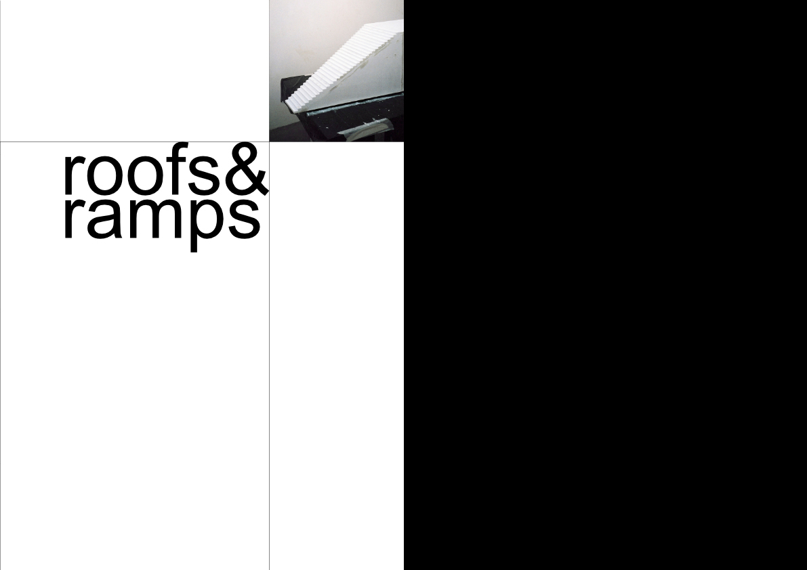
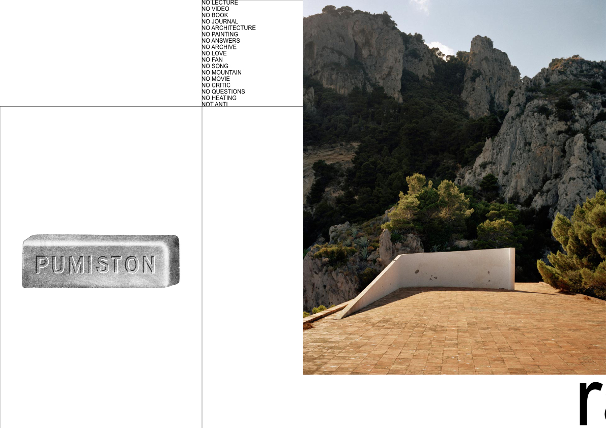
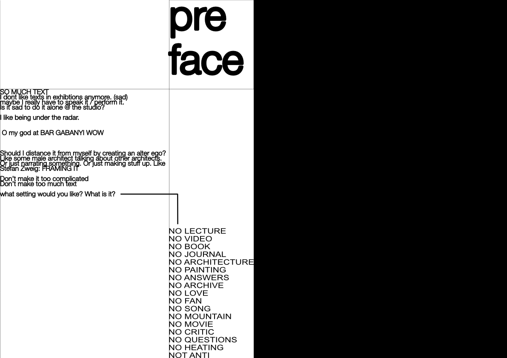
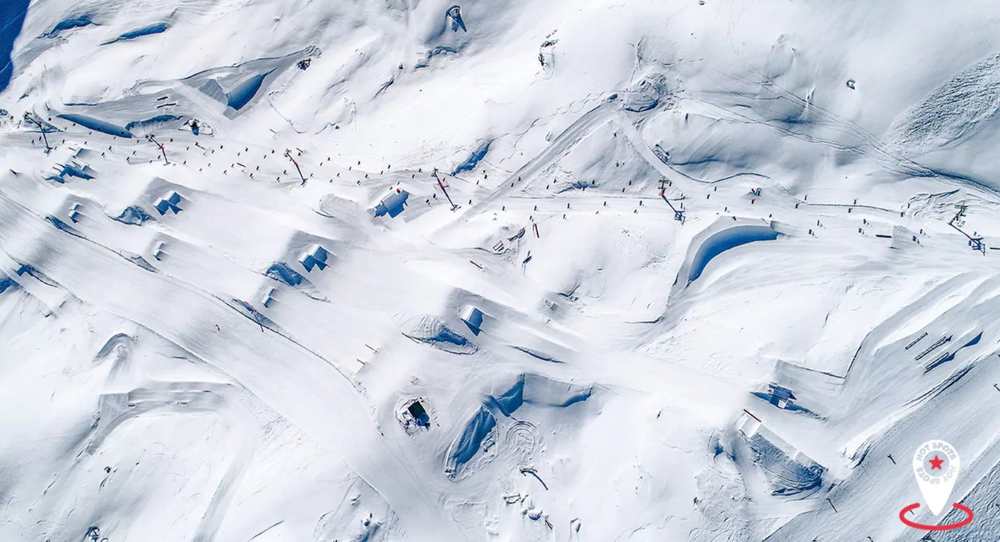
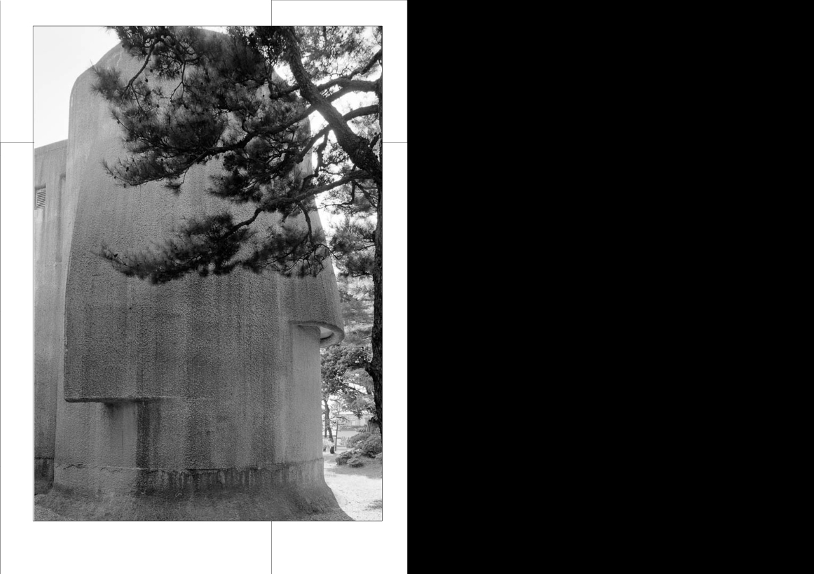

ROOFS + RAMPS
October 2025 - ongoing
roofs + ramps is an ongoing research project investigating roofs, ramps, and gradients as architectural figures of movement. Rather than understanding landscape as passive background, the project approaches it as a sign system and spatial structure through which bodies are directed, accelerated, and choreographed. From Le Corbusier’s promenade architecturale to the constructed terrains of snow parks, ramps and inclined surfaces become devices that organize perception, circulation, and power. The research also reflects on architecture itself as a historically patriarchal field, questioning how spatial forms encode authority, control, and notions of progress within the built environment.
some bits from the research:




